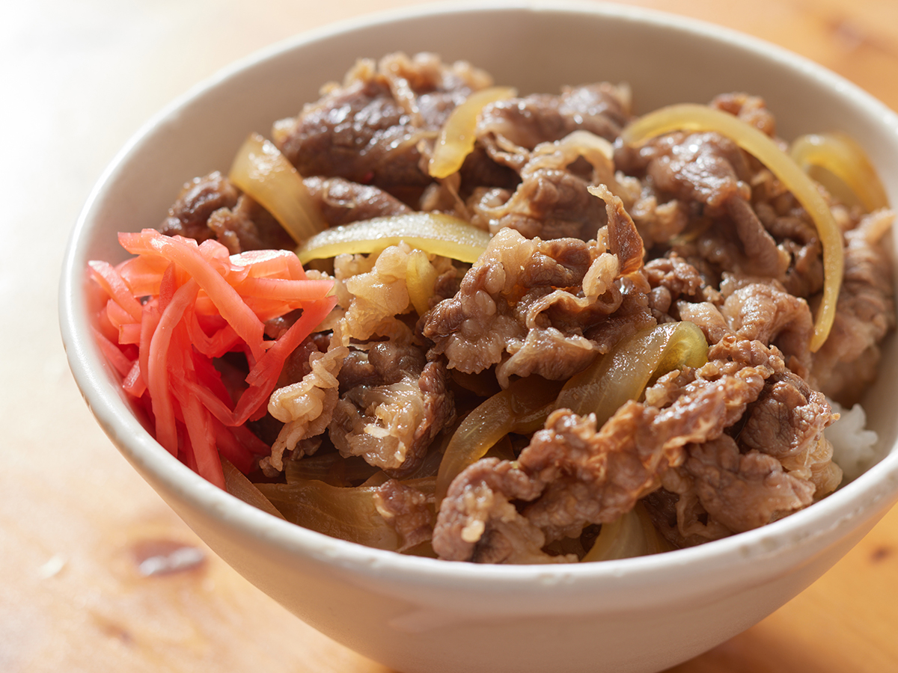

Gyudon

Description
Think of gyudon as the ultimate Japanese comfort food — tender, thinly sliced beef simmered in a sweet-savory sauce,
served over a steaming bowl of rice. Topped with pickled ginger,
this dish is a warm hug in a bowl that’s perfect for any occasion.
Ingredients
- 1 small onion
- 1/2 cup of hondashi
- 1/4 cup dry sake
- 2 tbsp soy sauce
- 1 tbsp sugar
- 1/2 pound thinly shaved beef ribeye or chuck steak
- 1 tsp grated ginger
- salt
- 2 cups cooked white rice
- sliced scallions
- beni-shoga (pickedle ginger)
Directions
- Thinly slice the onions into thin slivers.
- Combine onion, hondashi, sugar, and soy sause in a medium pan and bring to a simmer over medium heat.
- Continue cooking until the onion is soft.
- Add beef and continue cooking until the beef is fully cooked and the liquid has reduced to a concentrated broth.
- Serve in a bowl on warm cooked rice and add a little bit of beni-shoga and scallions as garnish.
Home